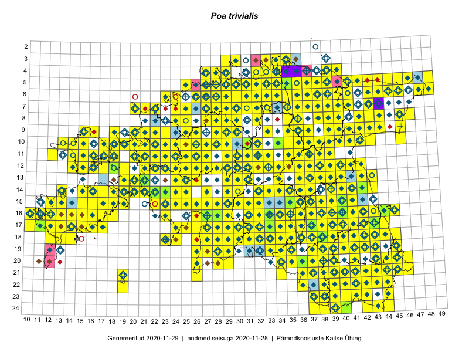

Poa trivialis
Uuendatud: 2016-12-01
Kaardile koondatud taksonid: Poa trivialis L.

Kaart põhineb 499 kirjel, neist vaatlusi 498 ja eksemplare 1.
Kuvatud viited 20 esimesele andmebaasikirjele, ülejäänud PlutoFis
- Toomas Kukk: 2015-06-23T14:30Z: 21-45: ala
- Rein Kalamees: 2015-06-08: 05-32: ala
- Toomas Kukk, Eerik Leibak: 2015-08-09: 14-15: ala
- Toomas Kukk, Thea Kull, Timo Luhamäe, Ott Luuk, Peedu Saar: 2015-06-28: 13-26: ala
- Toomas Kukk, Eerik Leibak: 2015-08-12: 10-17: ala
- Rein Kalamees, Kersti Püssa: 2015-08-31: 04-32: ala
- Tiit Hallikma, Indrek Tammekänd, Toomas Kukk: 2015-06-09: 12-29: ala
- Tiit Hallikma, Toomas Kukk: 2015-07-21: 05-44: ala
- Tiit Hallikma, Toomas Kukk: 2015-07-21: 05-45: ala
- Peedu Saar, Ott Luuk: 2015-06-21: 14-41: ala
- Peedu Saar, Ott Luuk: 2015-06-21: 14-42: ala
- Ott Luuk, Peedu Saar: 2015-07-27: 11-35: ala
- Peedu Saar: 2015-07-04: 18-45: ala
- Peedu Saar: 2015-07-04: 18-44: ala
- Peedu Saar, Elle Roosaluste: 2015-07-12: 13-20: ala
- Peedu Saar: 2015-07-15: 15-39: ala
- Tiit Hallikma, Toomas Kukk: 2015-07-22: 05-49: ala
- Toomas Kukk, Peedu Saar: 2014-07-09: 07-43: ala
- Toomas Kukk, Peedu Saar: 2014-07-09: 08-44: ala
- Ott Luuk: 2015-06-28: 13-26: ala